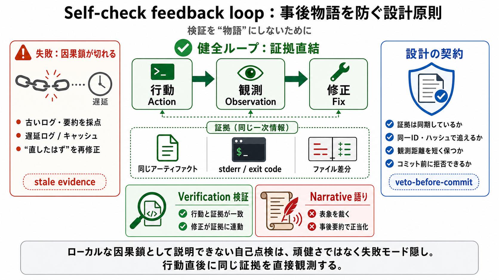

ABOUT YOU - song and lyrics by The LOOP
You Make me feel some type of way Yea it's you Thinking that you're better than me Yea it's you Acting like you're so sc…

You Make me feel some type of way Yea it's you Thinking that you're better than me Yea it's you Acting like you're so sc…
loop in To make or keep one informed about something, such as a plan or project. A noun or pronoun can be used between "…
In the loop means to be kept informed or updated. you want to be kept informed you're standing around in a circle. , you…
The phrase "keep you in the loop with" functions as a promise of continued communication. It indicates an intention to r…
In the loop means to be informed. Hey I'm going to keep you in the loop about our plans for next summer. I'm keep you in…